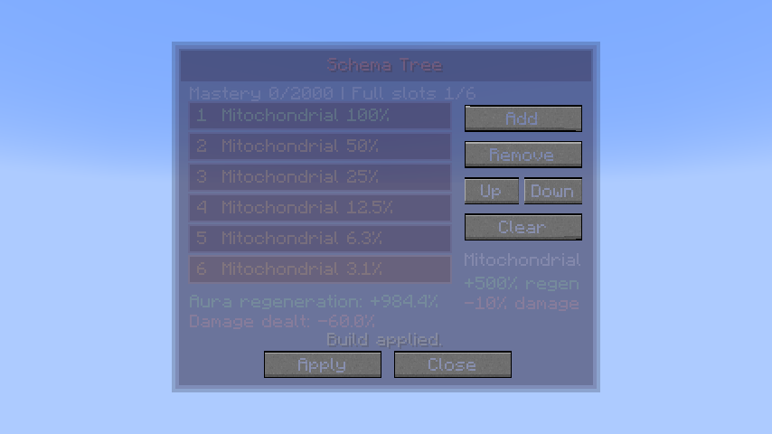
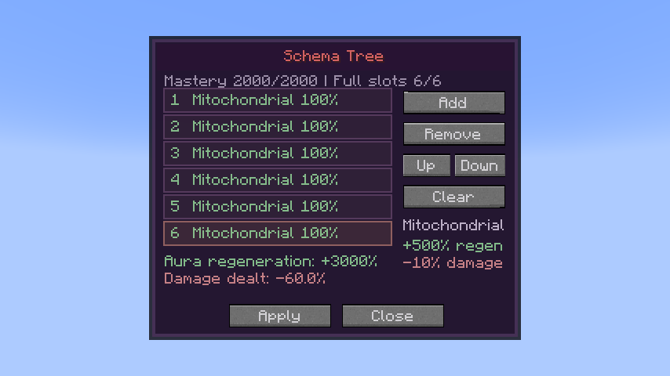

Schema is a Battlewill inspired by the Schema system from Infinite Mage. Organize biological effects into a six-slot Schema Tree, then toggle the art to activate the saved build. Its initial effect, Mitochondrial Build, trades outgoing damage for aura regeneration.
Contents

Obtaining
Schema appears as a learning entry in Tensura’s Battlewill menu on login or the next discovery tick. Complete 1,000 learning points to use it. Existing learning, mastery and builds are retained; there is no race or awakening gate. Chained/Unbound users may learn it as a Battlewill.
Usage
Schema Tree
[Passive - Toggle]
| Ability information | Value |
|---|---|
| Damage type | None |
| Damage ID | None |
| Effect | Activate every effect in the saved tree |
| Costs | None |
Toggle Schema with Tensura’s normal passive control. Both bonuses and drawbacks apply while it is enabled, including while resting. Turning it off removes both. The saved build remains available for the next activation. Forgetting Schema removes its regeneration modifier.
Build
[Active - Press] — Build
| Ability information | Value |
|---|---|
| Damage type | None |
| Damage ID | None |
| Capacity | Six ordered effects |
| Costs | None |
| Save | Apply |
Press Build to open the Schema Tree. Select a slot and use Add, Remove, Up, Down, or Clear to organize the draft. Apply saves it on the server and updates an active passive immediately. Close discards unapplied edits. Builds persist with the learned skill.
The menu previews each effect’s positive effectiveness, total aura-regeneration bonus and total damage penalty. Empty slots do not let you bypass diminishing returns. Currently, Add inserts Mitochondrial Build; later effects can extend the tree.

Stacking and mastery
At zero mastery, the six positive-effect weights are 100%, 50%, 25%, 12.5%, 6.25%, 3.125%. Each additional full-strength slot moves the start of this diminishing sequence one position later. Drawbacks always apply at their full amount.
| Mastery | Full-strength slots |
|---|---|
| 0–399 | 1 |
| 400–799 | 2 |
| 800–1,199 | 3 |
| 1,200–1,599 | 4 |
| 1,600–1,999 | 5 |
| 2,000 | All 6 |
Mastery is gained while an enabled, populated build actually restores aura, at most once per second through the normal mastery-point system. Opening the menu, saving, toggling and sitting at full aura do not grant free mastery. Native aptitude and Chained/Unbound Battlewill training bonuses apply.
Schema Tree effects
Mitochondrial Build
+500% aura regeneration; −10% all outgoing damage per stack.
Positive weights apply to the regeneration bonus. The damage penalty adds 10 percentage points per stack, with no mastery discount. It scales the complete ordinary outgoing hit, including flat effect bonuses, and native direct spiritual damage. Attack damage attributes are not multiplied separately, avoiding a second penalty on weapon-derived attacks.
| Build | Aura regeneration bonus | Total regeneration rate | Outgoing damage |
|---|---|---|---|
| One stack | +500% | 6× baseline | 90% |
| Six stacks, zero mastery | +984.375% | 10.84375× baseline | 40% |
| Six stacks, full mastery | +3,000% | 31× baseline | 40% |
These are baseline values before other Battlewill bonuses. Chained/Unbound’s enabled buff-effectiveness bonus boosts the positive bonus once and leaves the damage penalty alone. The preview includes that bonus. Native aura recovery, sleep recovery and Chained’s converted magicule regeneration benefit; Chained still retains only its normal flat magicule recovery. Aura remains capped at maximum, and effects that pause native regeneration still prevent recovery.

Related
Battlewills · Air Walk · Instant Transmission · Chained · Unbound